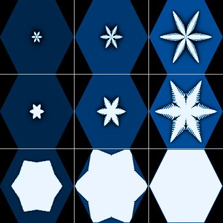
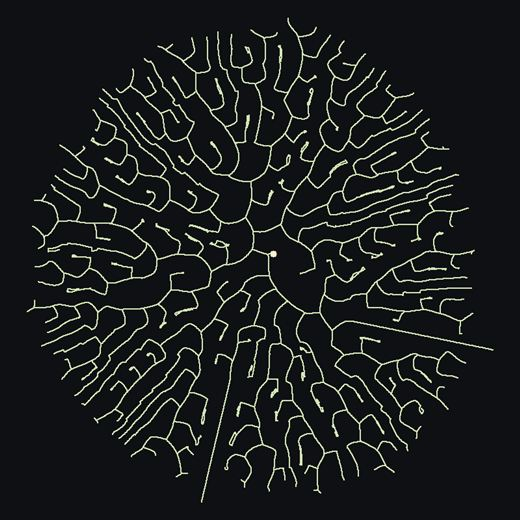
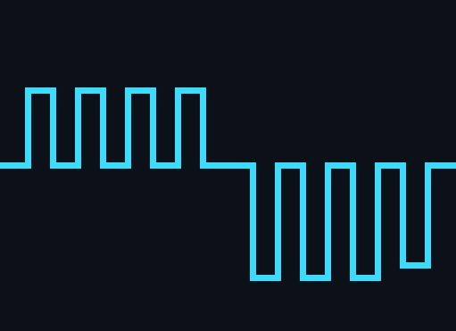

Lydite
A harness for coding agents, with independent verification.
The agents’ word is never the proof.
Lydite runs coding agents (called hands) on your repository, each hand’s commands behind a sandbox wall, replays your proof command itself, and opens a pull request only for what passed, with a receipt.
How a wave goes
The same wave, step by step
A wave is one launch: an objective, its tasks, one pull request.
- You give an objective and the command that proves the work done.An issue works too. The proof is yours:
--verify "cargo test". - A hand splits it into tasks. Lydite reads the plan itself.With
--dry-runit stops here and shows the plan. - Each task goes to a hand, in its own git worktree and branch.Under a required wall, the hand’s commands run behind it, with a filtered network exit.
- When a hand says it is done, Lydite replays your proof itself.Under a required wall, in a new sandboxed process. Green: the work is merged into the wave’s branch, and the proof is replayed after every merge. Red: one retry, with the error given to the hand, then the task is set aside.
- The tasks a plan marks critical are reviewed by another hand.It gets the diff and the replayed proof, and must say what was replayed and what was not.
- Lydite pushes the branch, opens the pull request with its receipt, and reads the CI.It never merges. Merging is your rule.
What a Lydite pull request says
A real receipt, read line by line
This is the body of pull request #127 of Lydite’s own repository, merged on 11 November 2026, abridged ([…]) and rewrapped. Lydite wrote it. The notes on the right are ours.
Receipt
- […]
- 3 hands, 0 retries, 0 set aside
Counted by Lydite, not reported by the agents: the hands, their retries, the tasks set aside.
- Effort: hand: high; reviewer: high
- Thread sealed at 4448678 bytes: sha256 f58fc6b0[…].
The journal of the run, sealed by its SHA-256 before the pull request is written.
- Proof settings changed: none
Judge every sandbox key that opens a hand’s wall, […]
Proof: cargo test && cargo clippy --all-targets -- -D warnings && cargo fmt --check → green
Your command, run again by Lydite after the hands have finished. Not by them.
[…]
Points to justify (found by Lydite without a model):
Found by Lydite itself, without a model: tests of the base that lost lines, assertions removed or changed. The reviewer is asked to say whether each one is justified.
- `src/branchements/srt/tests.rs`, line 194: an assertion removed or changed
- `src/coeur/protocole/tests.rs`: a test of the base changed (4 lines removed)
[…] 17 more lines
Review: 11 remarks, 0 blocking.
Reviewed and replayed on commit 9627088c2723976c196642ea836803dc20817a51.
The exact commit that was replayed and reviewed.
Not replayed (from the review):
What the review could not see replayed. Lydite prints it.
- Nothing here plays a real Claude Code hand on Linux or Windows: the real get_settings record is only copied into a fixture. […]
What Lydite refuses to do
What sets it apart is what it will not do
Each numbered refusal says what it saw and what to do.
- alwaysIt never merges.It opens the pull request and reads its CI. Merging is your rule.
- alwaysIt never takes a hand’s word.A fact a hand only declared is shown as declared, never as observed.
- 6022It starts nothing if your proof is already red.On the base commit, a red proof proves nothing afterwards.
- 6028It starts nothing if the wall does not start.Before any hand, it runs
trueunder the wall that will replay your proof: that shows the wall starts, not what it closes. - 7013It keeps a hand inside its task.A change outside the task’s list of files is refused. A hand does not run
git commit: Lydite commits. - 8005It does not publish what should stay yours.A change under
.github/, a path of your machine, or a line of yourgardefile. - alwaysIt does not push a hand to cheat.A hand that finds a test no honest code can pass says
IMPOSSIBLE. Lydite sets the task aside, replays nothing, retries nothing and merges nothing from it. The reason is the hand’s word, shown as declared. - alwaysIt never opens your Claude login file.And it puts no provider key in a profile or a pull request.
What it does not do for you: a green proof is worth what your proof is worth. Lydite does not judge whether your tests are good. Every refusal code, with its rule.
Built under Lydite
Three simulators, pull request after pull request
Lydite builds part of itself, and part of three public scientific simulators in Rust: 169 of the 231 pull requests merged in these four repositories carry a receipt. Every count below is read from the merged pull request bodies, as of 11 November 2026, 23:40 UTC.

Givre Lab
Crystal growth: aggregates, snow crystals, dielectric breakdown.
38 of 42 merged pull requests carry a receipt
208 hands · 7 retries · 1 task set aside
Mycelium Lab
The growth of a mycelium colony, hypha by hypha.
37 of 60 merged pull requests carry a receipt
159 hands · 1 retry · 0 tasks set aside
Physarum Lab
The slime mold Physarum polycephalum: a network of tubes that grows and finds its way.
12 of 13 merged pull requests carry a receipt
83 hands · 0 retries · 0 tasks set aside
With Lydite’s own repository (82 of 116 merged pull requests carry a receipt; 240 hands, 7 retries, 0 tasks set aside): 169 of 231 merged pull requests with a receipt, 690 hands, 15 retries, 1 task set aside. The hands ran on Claude models and on DeepSeek.
Try it
Install, check your machine, look at a plan first
What it takes: Linux on x86-64 (or WSL2 on Windows), git, gh logged in, Claude Code signed in, and about an hour the first time.
# download, verify it was built by this repository’s GitHub Actions, install gh release download --repo aoricloud/lydite --pattern 'lydite-*-linux-x86_64.tar.gz*' gh attestation verify lydite-*-linux-x86_64.tar.gz --repo aoricloud/lydite tar -xzf lydite-*-linux-x86_64.tar.gz mkdir -p ~/.local/bin && install -m 755 lydite-*-linux-x86_64/lydite lydite-*-linux-x86_64/lydite-reseau ~/.local/bin/ # launches no hand, writes nothing, says what is missing lydite doctor
# checks the wall and your proof, runs one hand that splits the objective, prints the plan, stops
lydite launch first "Add a test for the empty-input case of parse()" --split --verify "cargo test" --dry-run
The wall needs bubblewrap and socat, then srt (or, with the native wall, lydite-reseau), and a profile that you write and accept. The README has every step.
- From a shell
lydite launch,lydite status,lydite wait. - From Claude Code or another agent
lydite skillprints the skill an agent follows to drive Lydite. - From HermesA plugin with five tools, in the Hermes Agent plugin catalogue. The workers stay Lydite’s own.
Not replayed
What this page cannot show you
A receipt ends with what nobody saw replayed. So does this page. Status: early.
- Anyone but us.Lydite has only run on our own repositories. We know of no one else who has run it yet.
- The wall outside Linux.It only works there. On Windows it does not hold, and Lydite says so before it starts.
- Your tests.A green proof is worth what your proof is worth. Lydite does not judge whether your tests are good.
- The native wall around the hands.It holds the wall check and the replay of your proof, not yet the hands’ commands, which stay under Claude Code’s sandbox.